第09讲 难点探究专题：数轴上的动点探究问题(6类热点题型讲练)

目录
【考点一 数轴上单个动点问题】 1
【考点二 数轴上单个动点规律探究问题】 4
【考点三 数轴上的动点中求定值问题】 6
【考点四 数轴上双动点恒速运动问题】 12
【考点五 数轴上多动点恒速运动问题】 19
【考点六 数轴上中动点新定义型问题】 24
【考点一 数轴上单个动点问题】
例题：（23-24七年级上·广东佛山·期末）已知数轴上 、
、 两点对应的数分别为
两点对应的数分别为 、
、 ，
， 为数轴上一动点，对应的数为
为数轴上一动点，对应的数为 ，若点到、距离的比为
，若点到、距离的比为 ，则点表示的数为 ．
，则点表示的数为 ．
【答案】8或80
【知识点】数轴上的动点问题
【分析】本题考查了数轴上动点的移动规律，分类讨论是解题的关键．
【详解】解：考虑到点P是动点，分三种情况讨论：
①当点P在A点左侧时，因 ，则
，则
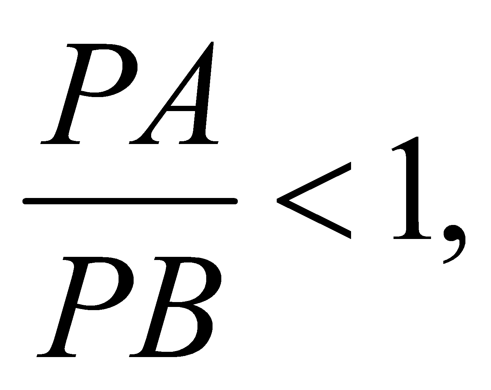
不符合题意，故舍去；②当P点在A、B中间时，有 ，解得
，解得
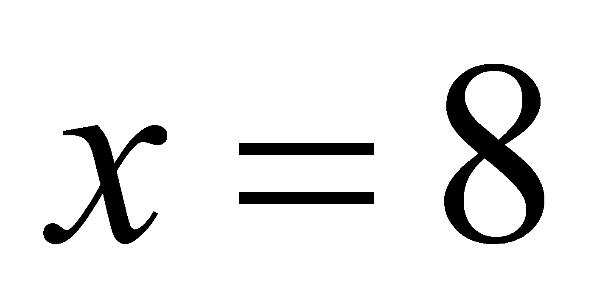
；③当P点在B点右侧时，有
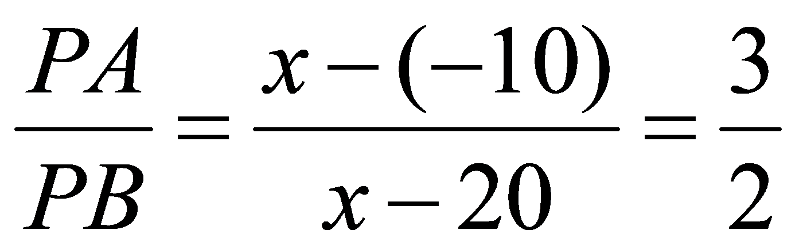
，解得 ．
．因此P点表示的数为8或80，
故答案为：8或80．
【变式训练】
1．（23-24六年级下·黑龙江哈尔滨·期中）如图，在数轴上，点A表示的数是 ，点B表示的数为
，点B表示的数为 ，点P是数轴上的动点．点P沿数轴的负方向运动，在运动过程中，当点P到点A的距离与点P到点B的距离比是
，点P是数轴上的动点．点P沿数轴的负方向运动，在运动过程中，当点P到点A的距离与点P到点B的距离比是 时，点P表示的数是 ．
时，点P表示的数是 ．
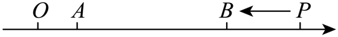
【答案】26或
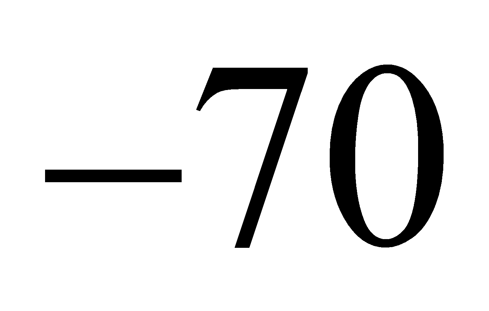
【知识点】数轴上两点之间的距离、数轴上的动点问题
【分析】本题考查了数轴上的动点问题、数轴上两点间的距离．可分为“当点P运动到点A右侧时”和“当点P运动到点A左侧时”两种情况讨论，根据“点P到点A的距离与点P到点B的距离比是”，列式计算即可，根据数轴得到两点间的距离是解题的关键．
【详解】解：∵在点P运动过程中，点P到点A的距离与点P到点B的距离比是，
∴ ，
，
当点P运动到点A右侧时，
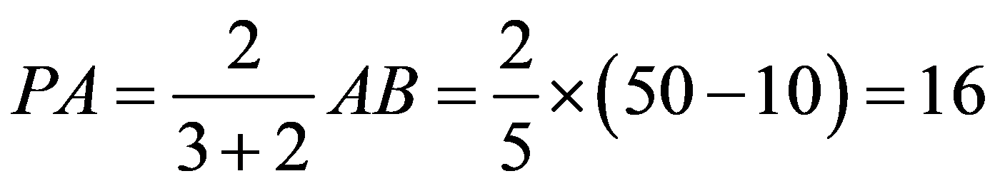
，∴此时点P表示的数是
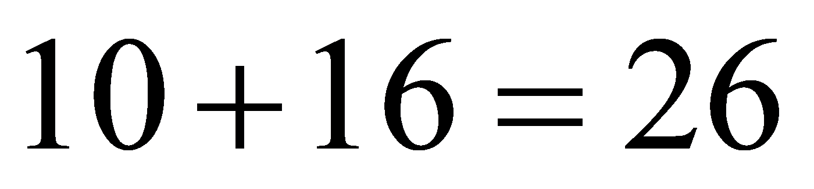
；当点P运动到点A左侧时，
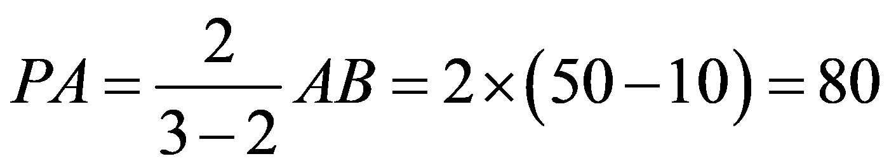
，∴此时点P表示的数是
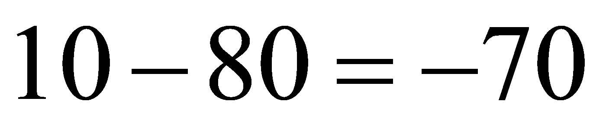
，综上所述，点P表示的数是26或．
故答案为：26或
2．（24-25七年级上·江苏·假期作业）阅读与思考
如图，一个点从数轴上的原点开始，先向右移动3个单位长度，再向左移动5个单位长度，可以看出，终点表示的数是 ．参照图中所给的信息，完成填空：
．参照图中所给的信息，完成填空：
已知A，B都是数轴上的点．
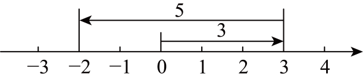
（1）若点A表示数 ．将点A向右移动5个单位长度至点
．将点A向右移动5个单位长度至点 ．则点表示的数是 ；
．则点表示的数是 ；
（2）若点A表示数2，将点A先向左移动7个单位长度，再向右移动 个单位长度至点
个单位长度至点 ，则点表示的数是 ；
，则点表示的数是 ；
（3）若将点B先向左移动3个单位长度，再向右移动6个单位长度，终点表示的数恰好是0，则点B所表示的数是 ．
【答案】 2  /
/
【知识点】数轴上的动点问题
【分析】本题主要考查了数轴上动点平移问题，解题关键是掌握数轴上点往右移几就加几，往左移几就减几，概括为“右加左减”．
（1）根据数轴上的点向右平移加，向左平移减，可得点表示的数；
（2）根据数轴上的点向右平移加，向左平移减，可得点表示的数；
（3）根据数轴上的点向右平移加，向左平移减，可得B点表示的数．
【详解】（1）解：由题意得： ，
，
∴点表示的数是2；
（2）解：由题意得： ，
，
∴点表示的数是 ；
；
（3）解：由题意得：0先向右移动3个单位长度，再向左移动6个单位长度得到点B
∴ ，
，
∴点B所表示的数是．
故答案为：2， ；
； ．
．
3．（23-24七年级上·贵州毕节·阶段练习）如图，一个点从数轴上的原点开始，先向左移动 到达点，再向右移动
到达点，再向右移动 到达点，然后再向右移动
到达点，然后再向右移动 到达
到达 点，数轴上一个单位长度表示
点，数轴上一个单位长度表示 ．
．

(1)请你在数轴上标出、、三点的位置，并填空：A表示的数为_______，B表示的数为_______，C表示的数为______．
(2)把点到点的距离记为 ，则
，则 _____
_____ ，
， ______；
______；
(3)若点从（1）中的位置沿数轴以每秒 匀速向右运动，经过多少秒使
匀速向右运动，经过多少秒使 ？
？
【答案】(1)
(2)5，8
(3)5或11
【知识点】数轴上两点之间的距离、数轴上的动点问题、用数轴上的点表示有理数
【分析】本题考查数轴上点的表示，数轴上两点间距离，数轴上动点问题．
（1）根据题意利用观察即可得到本题答案；
（2）根据题意利用两点间距离即可得到；
（3）分情况讨论当点A在点C的左侧时和当点A在点C的右侧时，分别列式即可得到本题答案．
【详解】（1）解：由题意得：A点对应的数为 ，B点对应的数为1，点C对应的数为4，
，B点对应的数为1，点C对应的数为4，
点A，B，C在数轴上表示如图：
 A表示的数为，B表示的数为1，C表示的数为4，
A表示的数为，B表示的数为1，C表示的数为4，
故答案为：；
（2）解：∵A点对应的数为，B点对应的数为1，点C对应的数为4，
∴， ，
，
故答案为：5，8；
（3）解∶①当点A在点C的左侧时，设经过x秒后点A到点C的距离为3cm，
由题意得：
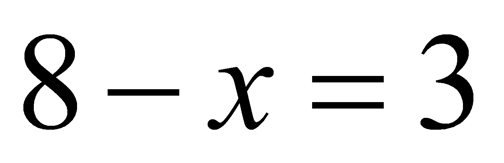
，解得： ；
；
②当点A在点C的右侧时，
设经过x秒后点A到点C的距离为3cm，
由题意得：
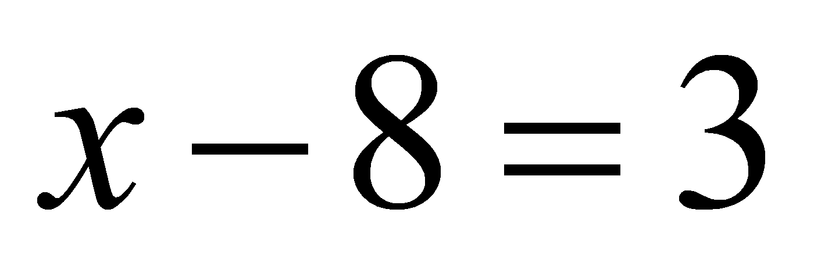
，解得： ，
，
综上，经过5或11秒后点A到点C的距离为3cm．
【考点二 数轴上单个动点规律探究问题】
例题：（23-24七年级上·广东珠海·期中）如图所示，将圆的周长分为 个单位长度，在圆的等分点处标上数字
个单位长度，在圆的等分点处标上数字 ，
， ，
， ，
， ，先让圆周上数字所对应的点与数轴上的数所对应的点重合，再让圆沿着数轴按逆时针方向滚动，那么数轴上的数
，先让圆周上数字所对应的点与数轴上的数所对应的点重合，再让圆沿着数轴按逆时针方向滚动，那么数轴上的数
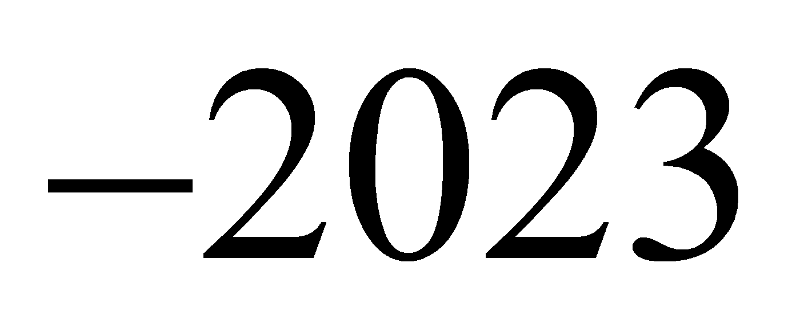
将与圆周上的数字 重合．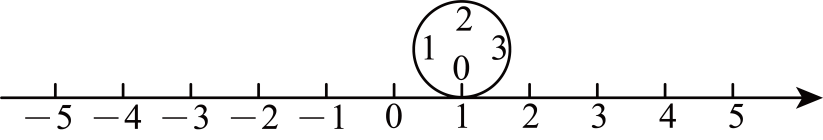
【答案】
【知识点】用数轴上的点表示有理数、数轴上的动点问题
【分析】本题考查了数轴，解题的关键是找到数轴上的数与圆周上数字之间的对应关系．根据周长为个单位长度，利用除以，进而可得答案．
【详解】解：根据题意得：
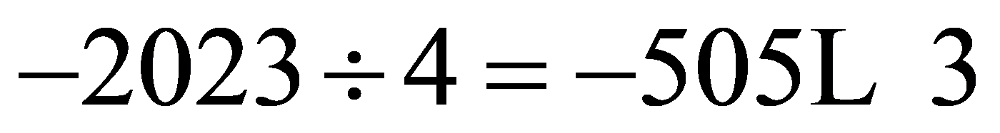
， 圆周上数字所对应的点与数轴上的数所对应的点重合，
圆周上数字所对应的点与数轴上的数所对应的点重合，
 数轴上的对应圆周上的，
数轴上的对应圆周上的，
数轴上的数将与圆周上的数字重合，
故答案为：．
【变式训练】
1．（22-23七年级上·广东佛山·阶段练习）点 从原点向距离原点左侧1个单位的
从原点向距离原点左侧1个单位的 点处跳动，第一次跳动到
点处跳动，第一次跳动到 的中点处，第二次从点跳动到
的中点处，第二次从点跳动到
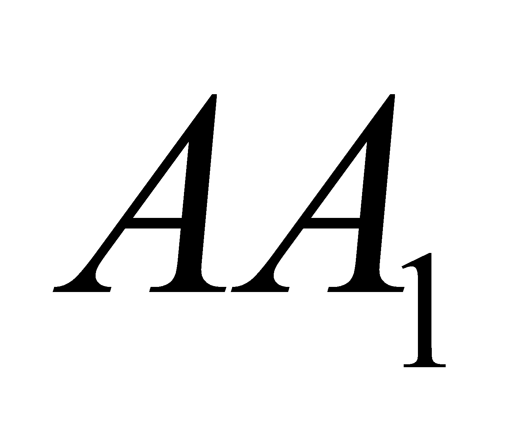
的中点处，第三次从点跳动到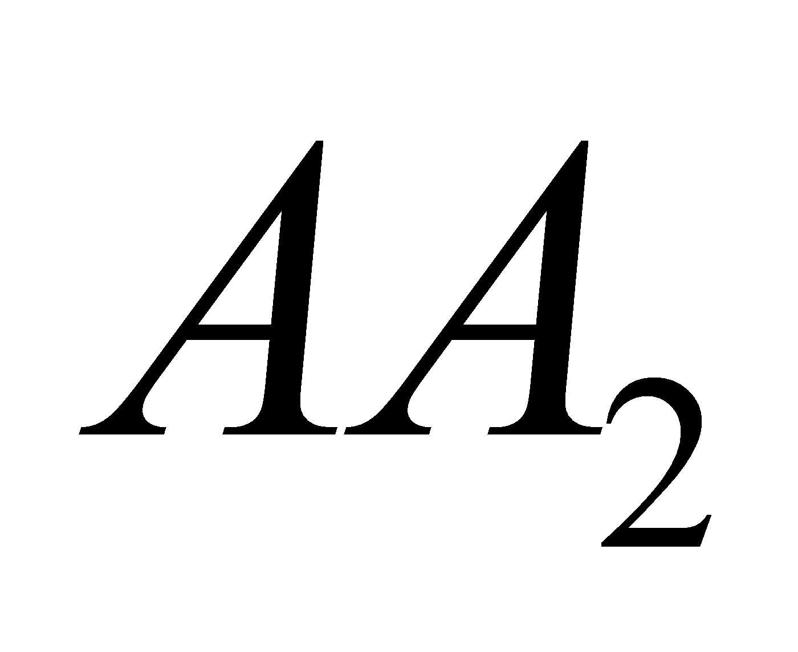
的中点 处，如此不断跳动下去，则第4次跳动后，P点（即
处，如此不断跳动下去，则第4次跳动后，P点（即 表示的数）为 ．
表示的数）为 ．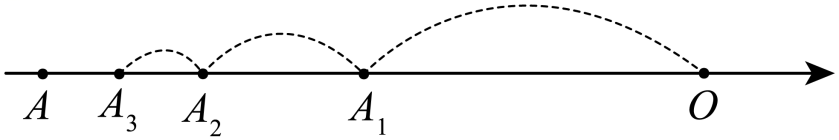
【答案】
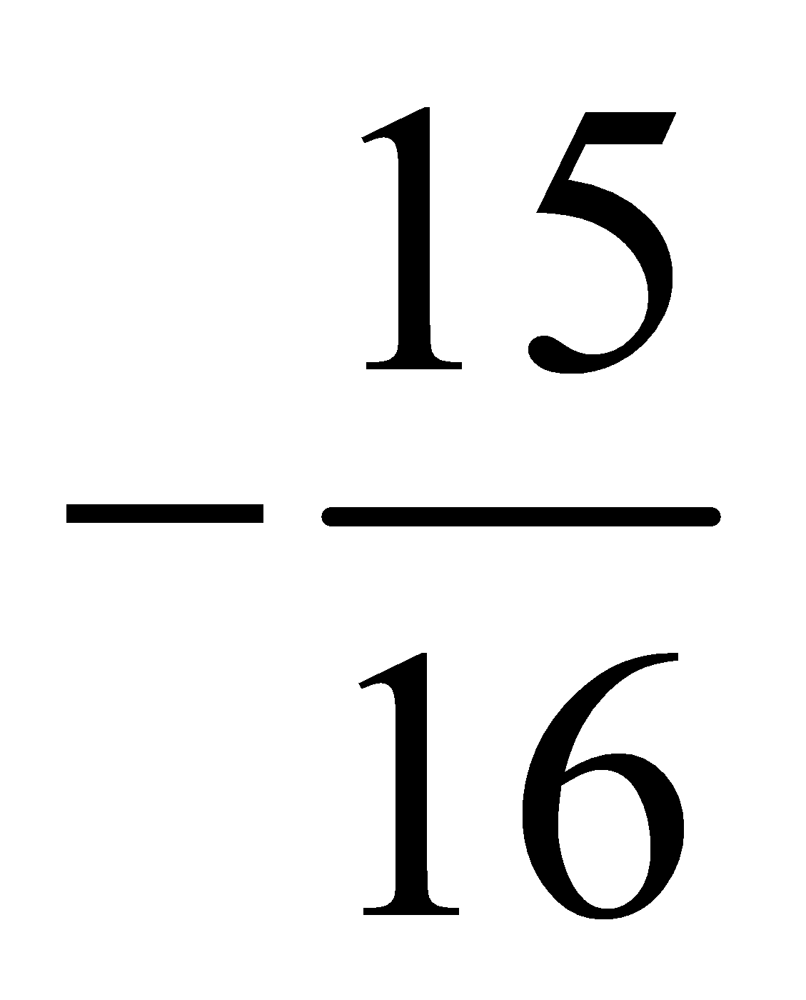
【知识点】数轴上的动点问题
【分析】解：根据题意可得第一次跳动到的中点处时，
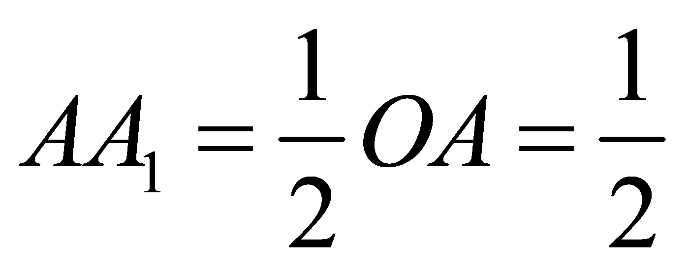
；第二次从点跳动到的中点处时，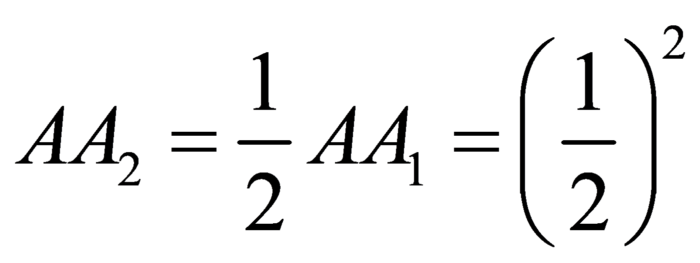
；第三次从点跳动到的中点处时，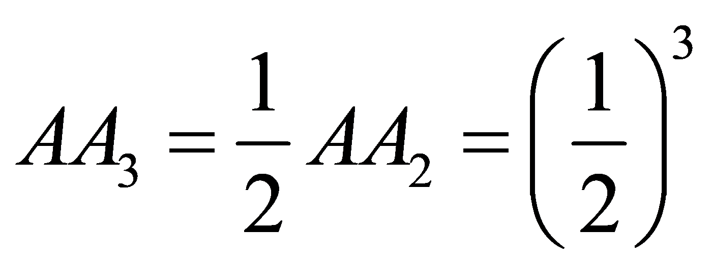
，第四次从点跳动到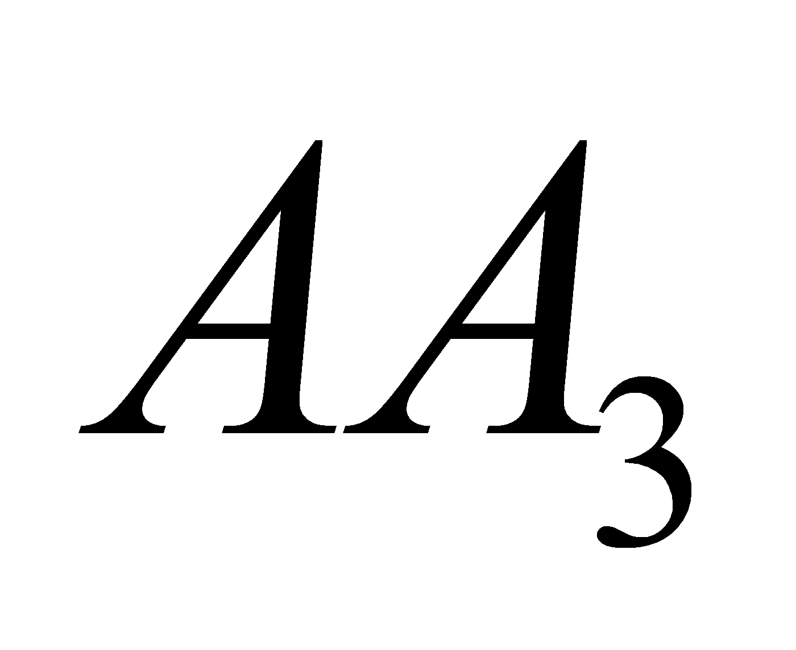
的中点处时，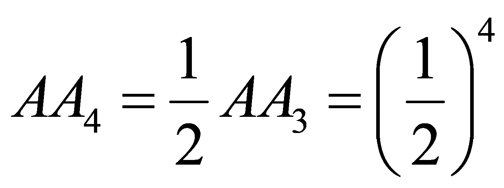
，最后结合线段的和差即可求得答案．【详解】解：∵
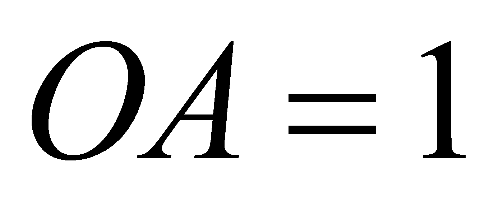
，∴第一次跳动到的中点处时，，
第二次从点跳动到的中点处时，，
第三次从点跳动到的中点处时，，
第四次从点跳动到的中点处时，，
∴第4次跳动后，
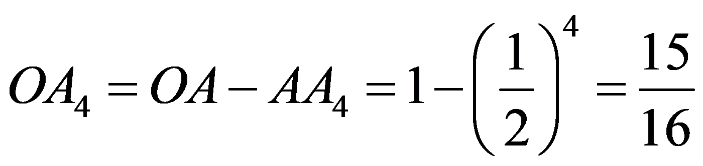
，∴点表示的数为．
故答案是：．
【点睛】本题考查了数轴上的找规律问题，此类题目在中考中经常出现，对于找规律的题目首先应找出哪些部分发生了变化，是按照什么规律变化的是解决问题的关键．
2．（22-23七年级上·江苏无锡·期中）如图，周长为14的长方形 ，其顶点A、B在数轴上，且点A对应的数为
，其顶点A、B在数轴上，且点A对应的数为 ，
， ，若将长方形沿着数轴向右做无滑动的翻滚，经过2023次翻滚后到达数轴上的点P，则P点所对应的数为 ．
，若将长方形沿着数轴向右做无滑动的翻滚，经过2023次翻滚后到达数轴上的点P，则P点所对应的数为 ．
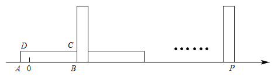
【答案】7083
【知识点】数轴上的动点问题
【分析】此题是找规律的题，长方形的周长是14，长是6，宽则为1，翻滚2次的和为7，翻滚2022次的和为7077，再翻滚1次即翻滚2023和为7078，
【详解】解：长方形的周长是14，长为6，则宽为1，点A对应，点B 对应5．
翻滚1次到达数轴上的点对应6，翻滚2次到达数轴上的点对应12；
翻滚3次到达数轴上的点对应13，翻滚4次到达数轴上的点对应19；
翻滚5次到达数轴上的点对应20，翻滚6次到达数轴上的点对应26；
……
翻滚2021次到达数轴上的点对应7076，翻滚1次到达数轴上的点对应7082；
翻滚2023次到达数轴上的点对应7083，故点P对应的数是7083．
故答案为：7083．
【点睛】本题考查的是数轴的一个知识，解题的关键是找到规律．
3．（23-24七年级上·安徽合肥·阶段练习）如图，点A在数轴上表示的数为2，且点A做以下移动：第1次点A向左移动2个单位长度至点，第2次从点向右移动4个单位长度至点，第3次从点向左移动6个单位长度至点，第4次从点向右移动8个单位长度至点…，按照这种移动方式进行下去，则：
（1）点 表示的数是 ；
表示的数是 ；
（2）点 表示的数是
表示的数是
【答案】 8 
【知识点】数轴上两点之间的距离、数轴上的动点问题、用数轴上的点表示有理数
【分析】（1）根据题意找出点、、 的规律，即可得出答案；
的规律，即可得出答案；
（2）根据题意找出点，， 的规律，即可得出答案．
的规律，即可得出答案．
【详解】序号为奇数的点在点A的左边，各点所表示的数依次减少2，分别为0， ，
， ，
， ，
， ，
， ……，
……，
序号为偶数的点在点A的右侧，各点所表示的数依次增加2，分别为4，6，8，10……，
∴表示的数是8，
∵点表示的数为0，
点表示的数为，
点表示的数为，
点
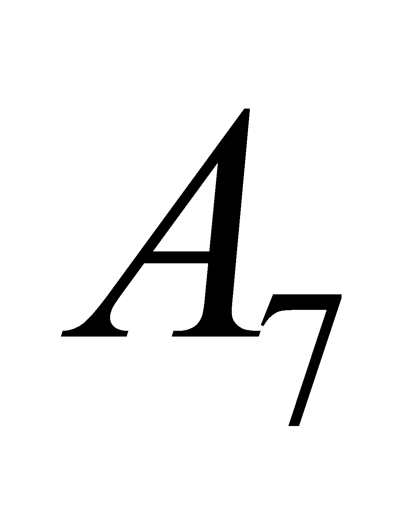
表示的数为，…
∴点表示的数是．
故答案为：8，．
【点睛】本题主要考查了数轴上点的规律，数轴上两点之间的距离，解题的关键是根据题意找出这些点的规律，并注意分类思想．
【考点三 数轴上的动点中求定值问题】
例题：点 在数轴上对应的数分别为
在数轴上对应的数分别为 ，且满足
，且满足
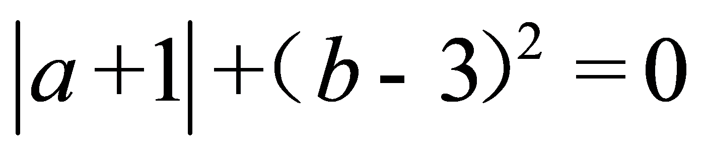
．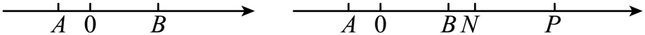
(1)如图，求线段 的长；
的长；
(2)若点C在数轴上对应的数为x，且x是方程 的根，在数轴上是否存在点P使，若存在，求出点P对应的数，若不存在，说明理由；
的根，在数轴上是否存在点P使，若存在，求出点P对应的数，若不存在，说明理由；
(3)如图，点P在B点右侧， 的中点为
的中点为 为
为 靠近于B点的四等分点，当P在B的右侧运动时，有两个结论：①
靠近于B点的四等分点，当P在B的右侧运动时，有两个结论：① 的值不变；②
的值不变；② 的值不变，其中只有一个结论正确，请判断正确的结论，并求出其值．
的值不变，其中只有一个结论正确，请判断正确的结论，并求出其值．
【答案】(1)4
(2) 或
或
(3)正确的结论为①的值不变，其值为2
【分析】（1）利用非负数的性质求出a与b的值，即可确定出的长；
（2）求出已知方程的解确定出x，得到C表示的点，设点P在数轴上对应的数是m，由确定出P位置，即可做出判断；
（3）设P点所表示的数为n，就有
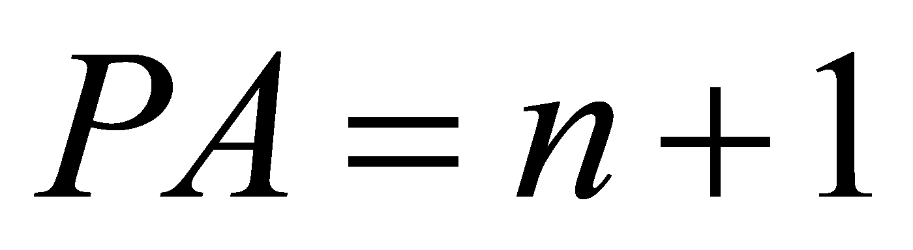
，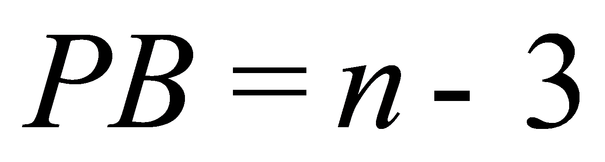
，根据条件就可以表示出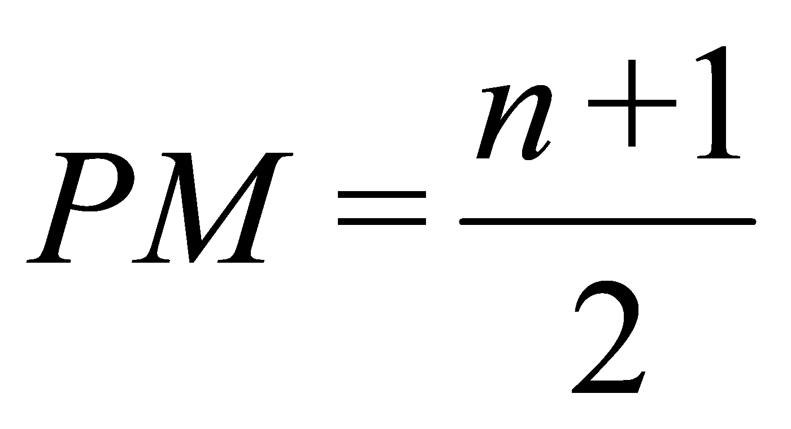
，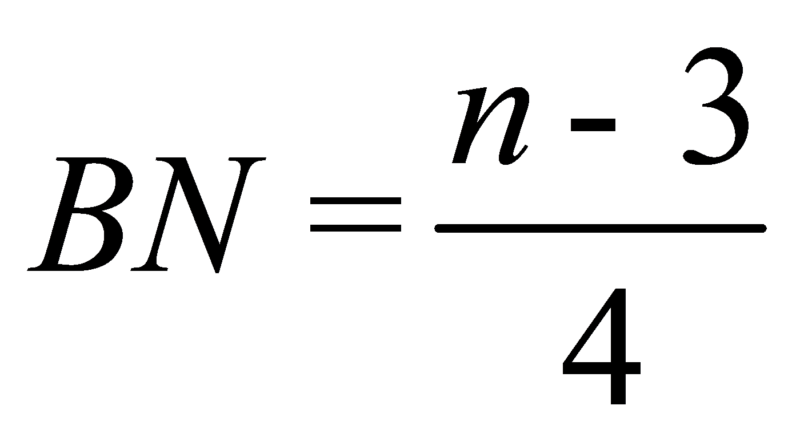
，再分别代入①和②求出其值即可．【详解】（1）解：∵，
∴ ，
，
 ，
，
∴
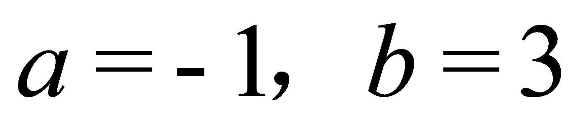
，∴
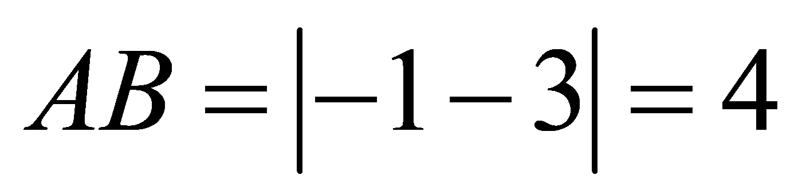
．答：的长为4；
（2）∵，
∴ ，
，
∴BC=
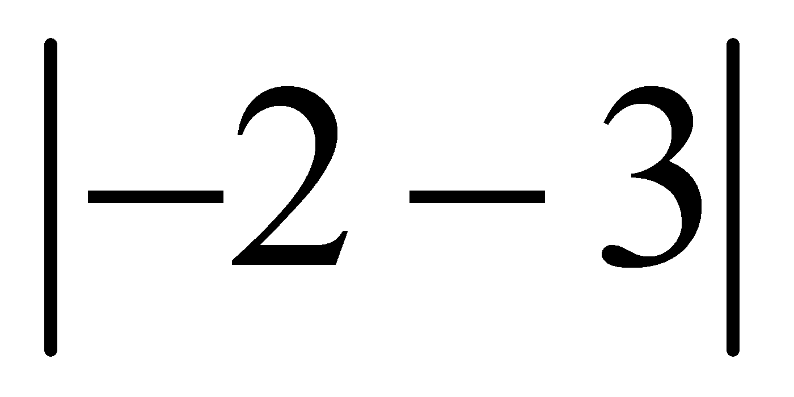
=5．设点P在数轴上对应的数是m，
∵，
∴
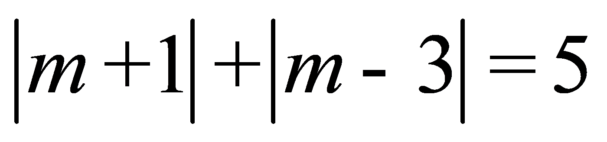
，令
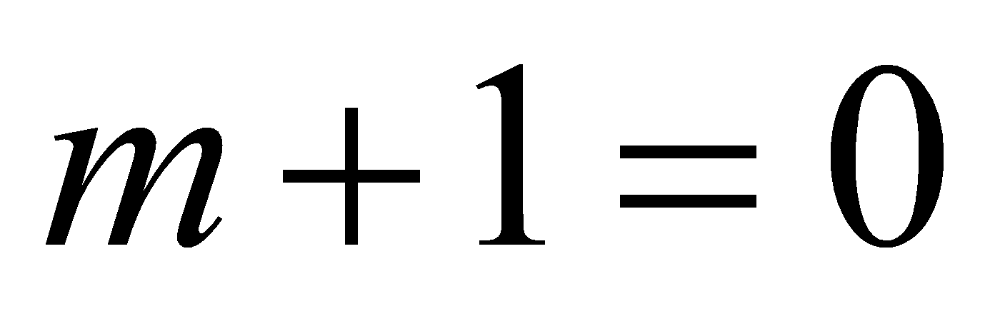
， ，
，
∴
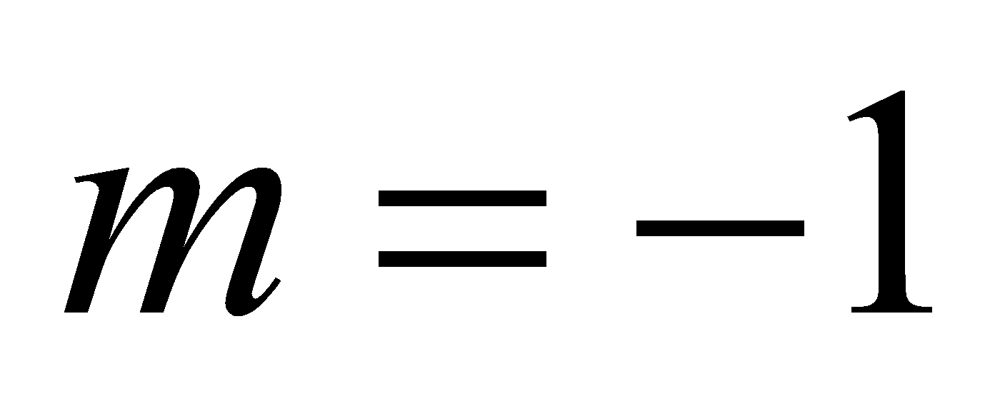
或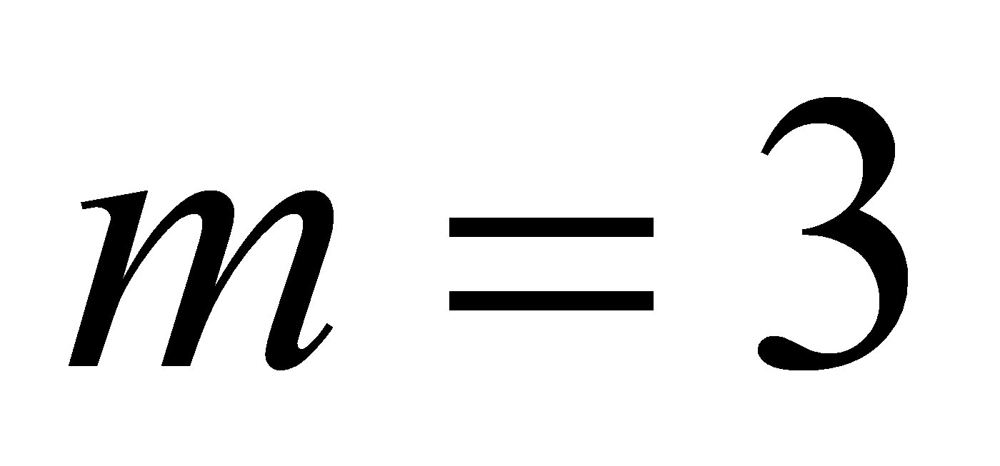
．①当
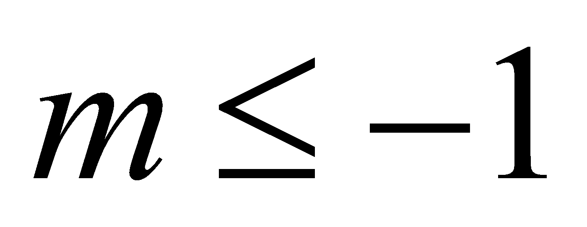
时，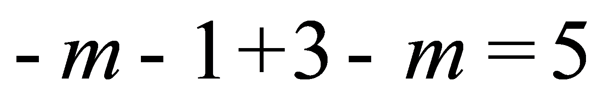
，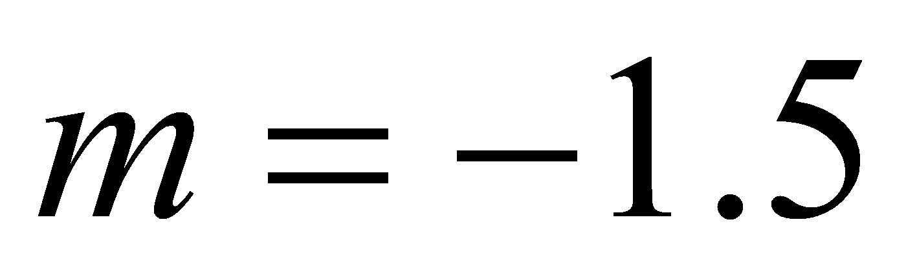
；②当
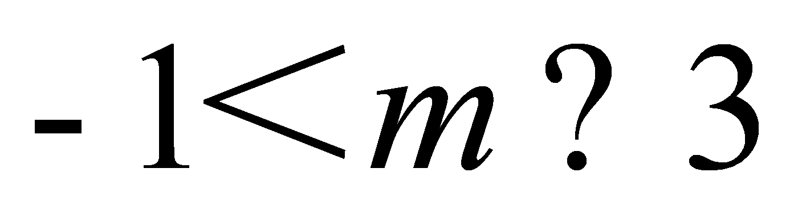
时，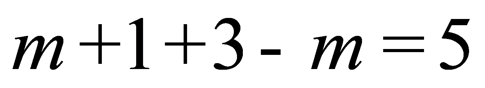
，（舍去）；③当
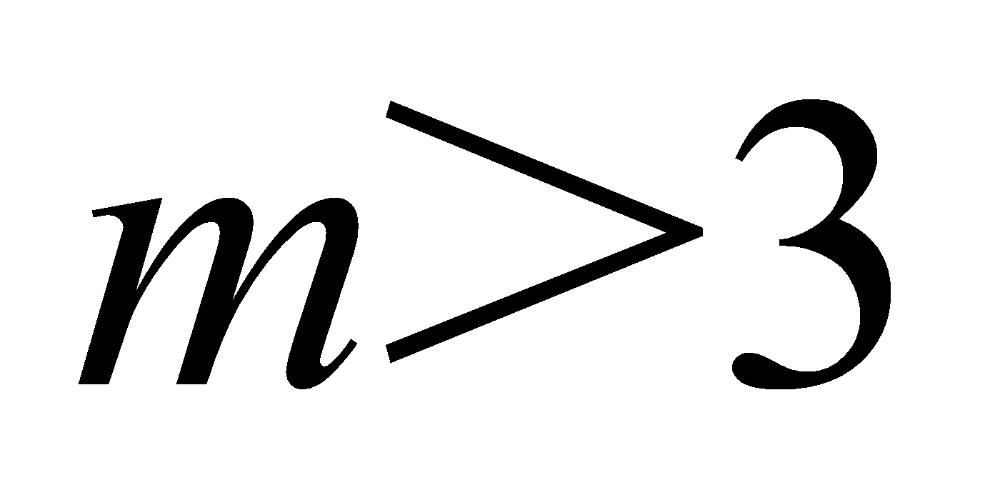
时，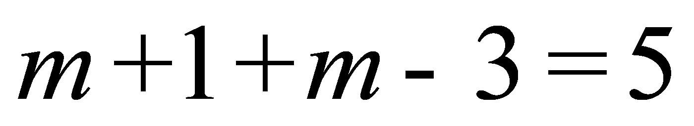
，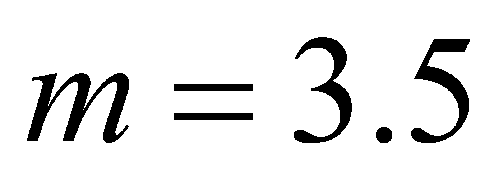
．∴当点P表示的数为或时，；
（3）解：设P点所表示的数为n，
∴，
．
∵PA的中点为M，
∴
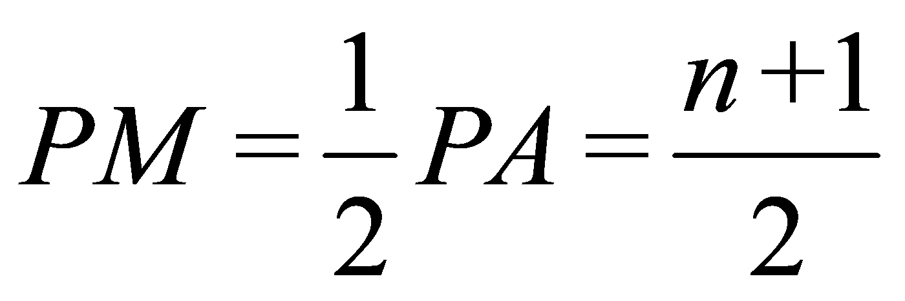
．∵N为的四等分点且靠近于B点，
∴B，
∴①=2（不变），
②（随点P的变化而变化），
∴正确的结论为①，且．
【点睛】此题考查了数轴的运用，数轴上任意两点间的距离公式的运用，去绝对值的运用，一元一次方程的解，解题的关键是灵活运用两点间的距离公式．
【变式训练】
1．阅读下面的材料：
如图①，若线段在数轴上，A，B点表示的数分别为a，b ，则线段的长（点A到点B的距离）可表示为．
，则线段的长（点A到点B的距离）可表示为．
请用上面材料中的知识解答下面的问题：
如图②，一个点从数轴上的原点开始，先向左移动1cm到达A点，再向左移动2cm到达B点，然后向右移动7cm到达C点，用1个单位长度表示1cm．
(1)请你在数轴上表示出 、
、 、
、 三点的位置，并直接写出线段
三点的位置，并直接写出线段 的长度；
的长度；
(2)若将点A向右移动 cm，请用代数式表示移动后的点表示的数？
cm，请用代数式表示移动后的点表示的数？
(3)若点B以每秒2cm的速度向左移动至点 ，同时点A，点C分别以每秒1cm和4cm的速度向右移动至点
，同时点A，点C分别以每秒1cm和4cm的速度向右移动至点 ，点，设移动时间为t秒，试探索：
，点，设移动时间为t秒，试探索： 的值是否会随着t的变化而变化？请说明理由．
的值是否会随着t的变化而变化？请说明理由．
【答案】(1)数轴见解析， cm
cm
(2)
(3)不变，理由见解析
【分析】（1）根据题目中点的运动可直接得出点、、的位置，进而可得出 的长度；
的长度；
（2）根据“数轴上的点，越往右越大”可得出点A移动后所表示的数；
（3）先分别表示，点，点所对应的数，再表达两点间的距离，进而可表示，最后判断它的值是否变化即可．
【详解】（1）如图所示：
．
 (cm)；
(cm)；
（2）将点A向右移动cm，则移动后的点表示的数为；
（3）的值不会随着t的变化而变化，
理由如下：
由题意可知，，点，点所对应的数分别为：， ，
， ，
，
由点的运动可知，点在点的右侧，点在点的右侧，
∴，
 ，
，
∴ ，
，
∴的值不会随着t的变化而变化．
【点睛】本题考查了数轴上点的运动，掌握数轴上两点之间的距离求解方法是解决问题的关键．
2．如图，一个点从数轴上的原点开始，先向左移动 到达A点，再向右移动到达B点，然后再向右移动到达C点，数轴上一个单位长度表示
到达A点，再向右移动到达B点，然后再向右移动到达C点，数轴上一个单位长度表示 ．
．
(1)请你在数轴上表示出A，B，C三点的位置；
(2)把点C到点A的距离记为，则 _______
_______ ．
．
(3)若点A沿数轴以每秒匀速向右运动，经过多少秒后点A到点C的距离为？
(4)若点A以每秒的速度匀速向左移动，同时点B、点C分别以每秒 、
、 的速度匀速向右移动．设移动时间为t秒，试探索：
的速度匀速向右移动．设移动时间为t秒，试探索： 的值是否会随着t的变化而改变？若变化，请说明理由，若无变化，请直接写出的值．
的值是否会随着t的变化而改变？若变化，请说明理由，若无变化，请直接写出的值．
【答案】(1)见解析；
(2)；
(3)秒或秒；
(4)不变化，值为 ．
．
【分析】（1）根据题意，在数轴上表示点A、B、C的位置即可；
（2）利用数轴上两点间的距离公式解题；
（3）分两种情况讨论：点A在点C的左侧或点A在点C的右侧；
（4）表示出，再相减即可解题．
【详解】（1）如图，
（2）
故答案为：；
（3）①当点A在点C的左侧时：
②点A在点C的右侧时：
所以，经过或秒后点A到点C的距离为3cm．
（4）移动t秒后，，
的值不会随着 的变化而变化，．
的变化而变化，．
【点睛】本题考查数轴、数轴上两点间的距离等知识，掌握相关知识是解题关键．
3．如图，记数轴上A、B两点之间线段长为， （单位长度），
（单位长度）， （单位长度），在数轴上，点A在数轴上表示的数是
（单位长度），在数轴上，点A在数轴上表示的数是 ，点D在数轴上表示的数是15．
，点D在数轴上表示的数是15．
(1)点B在数轴上表示的数是_____，点C在数轴上表示的数是_____，线段BC的长＝_____．
(2)若线段以1个单位长度/秒的速度向右匀速运动，同时线段 以2个单位长度/秒的速度向左匀速运动，当点B与C重合时，点B与点C在数轴上表示的数是多少？
以2个单位长度/秒的速度向左匀速运动，当点B与C重合时，点B与点C在数轴上表示的数是多少？
(3)若线段以1个单位长度/秒的速度向左匀速运动，同时线段以2个单位长度/秒的速度也向左匀速运动，设运动时间为t秒，当时，M为中点，N为 中点．
中点．
①若数轴上两个数为a、b，则它们的中点可表示为 ．则点M表示的数为_____，点N表示的数为______．（用代数式表示）
．则点M表示的数为_____，点N表示的数为______．（用代数式表示）
②线段MN的长是否为定值，如果是，请求出这个值；如果不是，请说明理由．
【答案】(1) ，14，24
，14，24
(2)当点B与C重合时，点B与点C在数轴上表示的数是﹣2
(3)①；；②MN的长是定值，
【分析】（1）数轴上点A右边的点B表示的数是点A表示的数加上这两个点的距离，数轴上点D左边的点C表示的数是点D表示的数减去这两个点的距离，依此方法可求出点B和点C表示的数，因为点C在点B的右边，所以用点C表示的数减去点B表示的数即得到线段的长；
（2）设运动的时间为t秒，先确定点B表示的数为，点B与点C相距24个单位长度，两个点相向运动，则点B与点C重合时，点B与点C运动的距离和为24，列方程求出t的值再求出点B表示的数即可；
（3）①先用t的代数式表示出A、B、C、D四点对应的数，再根据中点公式即可求解；
②用两点间距离公式即可求解．
【详解】（1）解：因为点A表示的数是，点B在点A右侧，且，
所以，
所以点B表示的数是；
因为点D表示的数是15，点C在点D的左侧，且，
所以，
所以点C表示的数是14，
点B与点C的距离是（单位长度），
所以线段BC的长为24个单位长度，
故答案为：，14，24．
（2）设运动的时间为t秒，则点B表示的数是，
根据题意得，
解得 ，
，
所以，
答：当点B与C重合时，点B与点C在数轴上表示的数是 ．
．
（3）①根据题意得，t秒后点A对应的数为：，点C对应的数为：，
∵M为中点，
∴点M对应的数为：，
t秒后点B对应的数为：，点D对应的数为：，
∵N为中点，
∴点N对应的数为：，
故答案为：；；
②线段 的长为定值，
的长为定值，
∵点M对应的数为，点N对应的数为；
∴，
∴线段的长为定值．
【点睛】此题考查数轴上两点的距离的求法、解一元一次方程、列一元一次方程解应用题等知识与方法，解题的关键是正确理解行程问题中相遇问题和追及问题的数量关系并且用代数式和等式表示这些关系．
【考点四 数轴上双动点恒速运动问题】
例题：（23-24七年级上·吉林长春·阶段练习）如图，数轴上的单位长度为1， 两点表示的数是互为相反数；
两点表示的数是互为相反数；
(1)点表示的数是______，点表示的数______．
(2)数轴上一个动点先向左移动2个单位长度，再向右移动5个单位到达点 ，若点表示的数是1，则点所表示的数是______．
，若点表示的数是1，则点所表示的数是______．
(3)在数轴上，点 为坐标原点，若点
为坐标原点，若点 点分别以2个单位长度/秒和0.5个单位长度/秒的速度向右运动，当两点同时运动时，设运动时间为
点分别以2个单位长度/秒和0.5个单位长度/秒的速度向右运动，当两点同时运动时，设运动时间为 秒
秒 ．
．
①点表示的数为______；点表示的数为______．（用含的式子表示）
②当为何值时，点点 点三点之间恰好有一个点到其他两个点的距离相等？
点三点之间恰好有一个点到其他两个点的距离相等？
【答案】(1)；
(2)
(3) ，
，  ；
； 或或
或或
【知识点】数轴上两点之间的距离、数轴上的动点问题、用数轴上的点表示有理数
【分析】本题主要考查一元一次方程的应用，路程、速度与时间关系的应用，熟练掌握两点间的距离公式是解题的感觉．
（1）根据两点表示的数是互为相反数即可得到答案；
（2）设点所表示的数为，根据题意列出方程即可得到答案；
（3）①根据数轴上的点左加右减的运动规律得到答案；
②分三种情况依次进行讨论即可．
【详解】（1）解： ，两点表示的数是互为相反数，
，两点表示的数是互为相反数，

 点表示的数是，点表示的数为；
点表示的数是，点表示的数为；
（2）解：设点所表示的数为，
根据题意得： ，
，
解得 ，
，
故答案为：；
（3）解：①运动时间为秒，
点表示的数是，点表示的数为；
②当为中点时，即未出发，
，
当点为中点时，此时，
 点表示的数是，点表示的数为，
点表示的数是，点表示的数为，
解得，
当点为中点时，此时，
 ，
，
解得．
综上所述，或或．
【变式训练】
1．（23-24七年级上·四川宜宾·期末）如图，数轴的原点为，在数轴上有、两点，点对应的数是，点对应的数是1，动点、 同时从、出发，分别以3个单位/秒和1个单位/秒的速度沿着数轴正方向运动，设运动时间为秒（
同时从、出发，分别以3个单位/秒和1个单位/秒的速度沿着数轴正方向运动，设运动时间为秒（ ）．
）．
(1) 两点间的距离是 ；
两点间的距离是 ；
(2)当 时，动点对应的数是 ，动点对应的数是 ；
时，动点对应的数是 ，动点对应的数是 ；
(3)当运动时间为秒时，用含的代数式表示出点和点所对应的数；
(4)当 时，点是否为线段
时，点是否为线段 的中点？
的中点？
【答案】(1)
(2) ，
，
(3)，
(4)是，理由见解析
【知识点】数轴上的动点问题、数轴上两点之间的距离
【分析】本题考查了数轴上的动点问题，涉及了数轴上两点间的距离公式．根据动点的起始位置、运动方向和运动速度确定动点在数轴上对应的数是解题关键．
（1）根据 即可求解；
即可求解；
（2）根据动点的起始位置、运动方向和运动速度即可求解；
（3）根据动点的起始位置、运动方向和运动速度即可求解；
（4）表示出线段的中点对应的数即可求解；
【详解】（1）解： ，
，
故答案为：
（2）解：当时，动点对应的数是：；
动点对应的数是： ，
，
故答案为：，
（3）解：当运动时间为秒时，动点对应的数是：；
动点对应的数是：
（4）解：线段的中点对应的数是：
令 ，
，
解得：
∴当时，点是否为线段的中点
2．（23-24七年级上·吉林长春·期中）如图，点 均在数轴上，点所对应的数是，点在点的右边，且距点
均在数轴上，点所对应的数是，点在点的右边，且距点 个单位长度，点
个单位长度，点 是数轴上的两个动点．
是数轴上的两个动点．
(1)求出点所对应的数；
(2)当点到点的距离之和是个单位长度时，求出此时点所对应的数；
(3)若点分别从点出发，均沿数轴向左运动，点每秒运动个单位长度，点 每秒运动
每秒运动 个单位长度．若点先出发秒后点出发，当两点相距个单位长度时，直接写出此时点分别对应的数．
个单位长度．若点先出发秒后点出发，当两点相距个单位长度时，直接写出此时点分别对应的数．
【答案】(1) ；
；
(2) 或
或 ；
；
(3)点对应的数是 ，点对应的数是
，点对应的数是 或点对应的数是
或点对应的数是 ，点对应的数是
，点对应的数是 ．
．
【知识点】数轴上两点之间的距离、数轴上的动点问题
【分析】（）根据两点间的距离公式即可求解；
（）分两种情况： 点在点的左边，；
点在点的左边，； 点在点的右边，进行讨论即可求解；
点在点的右边，进行讨论即可求解；
（3）分两种情况：点在点的左边，点在点的右边，进行讨论即可求解；
本题考查了两点间的距离和数轴，解题的关键是熟练掌握数轴及“分类讨论”的数学思想．
【详解】（1） ，故点所对应的数是；
，故点所对应的数是；
（2） ，
，
点在点的左边，
 ，
，
点在点的右边，
，
故点所对应的数是或；
（3）点在点的左边，
（秒），
点对应的数是，点对应的数是 ；
；
点在点的右边，
（秒），
点对应的数是，点对应的数是，
综上可知：点对应的数是，点对应的数是或点对应的数是，点对应的数是．
3．（21-22七年级上·福建福州·期末）如图，已知点A，B，C是数轴上三点，O为原点．点C对应的数为6， ，
， ．
．
(1)求点A，B对应的数；
(2)动点P，Q分别同时从A，C出发，分别以每秒6个单位和3个单位的速度沿数轴正方向运动．M为 的中点，N在线段
的中点，N在线段 上，且
上，且 ，设运动时间为
，设运动时间为 ．
．
①求点M，N对应的数（用含t的式子表示）；
②t为何值时， ．
．
【答案】(1)点A表示的数是 ，点B表示的数是
，点B表示的数是
(2)①表示的数是 ，N表示的数是
，N表示的数是 ②秒或
②秒或 秒
秒
【知识点】数轴上两点之间的距离、数轴上的动点问题
【分析】本题考查了数轴上的动点问题，数轴上两点之间的距离，一元一次方程的应用，熟练掌握题中的数量关系是解答本题的关键．
（1）由， 得的长，再根据数轴上两点之间的距离的计算方法，即得答案；
（2）①先求出，的长，再求 ，
， 的长，再根据数轴上两点之间的距离的计算方法，即得答案；
的长，再根据数轴上两点之间的距离的计算方法，即得答案；
②分点M在点O的左侧和右侧两种情况，分别求出 ，
， 的长，再根据列方程并求解，即得答案．
的长，再根据列方程并求解，即得答案．
【详解】（1）因为， ，
所以 ，
，
所以点A表示的数是 ，点B表示的数是
，点B表示的数是 ；
；
（2）①由已知得， ，
，
因为M为的中点， ，
所以 ，，
，，
则点M对应的数为，点M，N对应的数；
②由题意知， ，
，
当点M在点O的左侧时，，
若，则 ，
，
解得，
当点M在点O的右侧时， ，
，
若，则，
解得；
综上所述，当秒或秒时，．
4．（23-24七年级上·河北沧州·期末）如图，已知点、、是数轴上三点，为原点．点对应的数为， ，
， ．
．
(1)则点对应的数是 ，点对应的数是 ；
(2)动点、分别同时从、出发，分别以每秒 个单位和个单位的速度沿数轴正方向运动．在线段上，且
个单位和个单位的速度沿数轴正方向运动．在线段上，且 ，在线段上，且
，在线段上，且 ，设运动时间为．
，设运动时间为．
①求点、对应的数（用含的式子表示）
②猜想 的长度是否与的大小有关？如果有关请你写出用表示的代数式；如果无关请你求出的长度．
的长度是否与的大小有关？如果有关请你写出用表示的代数式；如果无关请你求出的长度．
【答案】(1) ，
，
(2)①点M对应的数为： ，点N对应的数为：；②的长度与无关，长度为
，点N对应的数为：；②的长度与无关，长度为
【知识点】数轴上两点之间的距离、数轴上的动点问题、用数轴上的点表示有理数
【分析】本题是数轴上的动点问题，涉及数轴上两点之间的距离，数轴上的点表示数等知识，解题的关键是掌握数轴上两点之间的距离公式．
（1）由已知、结合数轴，根据数轴上两点之间的距离即可求解；
（2）①由题意可得、的长度，从而由点、对应的数即可求出点、对应的数；②根据题意可得点对应的数，进而得到的长度，根据结果即可作出判断．
【详解】（1）解：点对应的数为，，
点对应的数为： ，
，
又，
点对应的数为： ，
，
故答案为：，；
（2）①由动点、分别同时从、出发，分别以每秒个单位和个单位的速度沿数轴正方向运动，则， ，
，
又 ，，
，，
 ，
， ，
，
点对应的数为：，点对应的数为：；
②的长度与无关，理由如下：
由于，
点对应的数为：，
则 ，
，
即的长度与无关，长度为．
5．（23-24七年级上·广东韶关·期中）如图，已知数轴上的点 表示的数为6，
表示的数为6， 是数轴上一点，且
是数轴上一点，且 ．动点
．动点 从点出发，以每秒6个单位长度的速度沿数轴向左匀速运动，设运动时间为
从点出发，以每秒6个单位长度的速度沿数轴向左匀速运动，设运动时间为 秒．
秒．
(1)写出点表示的数__________，点表示的数__________（用含 的代数式表示）；
的代数式表示）；
(2)动点 从点出发，以每秒4个单位长度的速度沿数轴向左匀速运动，若点、同时出发，点运动几秒时追上点，并求出此时表示的数；
从点出发，以每秒4个单位长度的速度沿数轴向左匀速运动，若点、同时出发，点运动几秒时追上点，并求出此时表示的数；
(3)若 为
为 的中点，
的中点， 为
为 的中点．点在运动的过程中，线段
的中点．点在运动的过程中，线段 的长度是否发生变化？若变化，请说明理由；若不变，请你画出图形，请求出线段的长．
的长度是否发生变化？若变化，请说明理由；若不变，请你画出图形，请求出线段的长．
【答案】(1) ；
；
(2)
(3)运动时，长度不会发生变化，理由见解析
【分析】（1）根据点A的坐标减去点B的坐标等于 的长度，可求得点B的坐标；同理根据点A的坐标减去点P的坐标等于运动距离
的长度，可求得点B的坐标；同理根据点A的坐标减去点P的坐标等于运动距离 ，可求得点P的坐标．
，可求得点P的坐标．
（2）与（1）类似，先求出点R的坐标为 ，然后令与点P的坐标相等，可列出等式：
，然后令与点P的坐标相等，可列出等式： ，求解t值；然后将t值代入．
，求解t值；然后将t值代入．
（3）分点P运动到AB之间与点P运动点B的左侧，两种情况分别讨论．
【详解】（1）解：∵点A表示的数为6， ，，即
，，即
∴
∴点B表示的数是：
依题意有：
∴
即点P表示的数是
故答案为：
（2）解：根据题意可得：
解得：
即点运动5秒时追上点R
当时，
 点表示的数为
点表示的数为
（3）运动时，长度是恒定的
①当在A，之间，（如图）
则
②当在左侧时，（如图）

∴运动时，长度是恒定的，为定值5
【点睛】本题考查数轴上动点问题，解题的关键是结合动点路程问题得到两点距离或点的坐标，注意分类讨论．
【考点五 数轴上多动点恒速运动问题】
例题：（23-24七年级上·陕西西安·期中）点 在数轴上表示的数分别为，且满足
在数轴上表示的数分别为，且满足 ，多项式是五次四项式．
，多项式是五次四项式．
(1) 的值为_________，
的值为_________， 的值为_________，
的值为_________， 的值为_________．
的值为_________．
(2)若数轴上有三个动点，分别从点开始同时出发在数轴上运动，速度分别为每秒1个单位长度、7个单位长度、3个单位长度． 其中点向左运动，点 向右运动，点
向右运动，点 先向左运动，遇到点后回头再向右运动，遇到点后又回头再向左运动，…，这样直到点遇到点时三点都停止运动，求点所走的路程；
先向左运动，遇到点后回头再向右运动，遇到点后又回头再向左运动，…，这样直到点遇到点时三点都停止运动，求点所走的路程；
(3)已知点 为数轴上一点，它表示的数为
为数轴上一点，它表示的数为 ，求的最小值，并写出此时的取值．
，求的最小值，并写出此时的取值．
【答案】(1)
(2)52.5
(3)78，．
【知识点】数轴上两点之间的距离、化简绝对值、数轴上的动点问题、绝对值非负性
【分析】本题综合考查了多项式、动点在数轴上的表示的数及线段长之间的关系等问题，综合性较强，难度较大．
（1）利用非负数的性质求出b与c的值，根据多项式为五次四项式求出a的值；
（2）由题意求出点P遇到点M的时间，也就是点N的运动时间，首先求出 的距离，设相遇时间为t，分别表示出两点行驶的距离，建立方程解决问题即可；
的距离，设相遇时间为t，分别表示出两点行驶的距离，建立方程解决问题即可；
（3）分四种情况化简式子，可求解．
【详解】（1）解：，
，
∵多项式是五次四项式，
故答案为：；
（2）点P，M相遇时间，
点所走路程：（单位长度）．
故点所走的路程为52.5单位长度．
（3）将代入，
可得
当时，原式，
当时，原式，
当时，原式，
当时，原式，
∴当时， 的最小值为78．
的最小值为78．
【变式训练】
1．（23-24七年级上·广东广州·期中）阅读：如图，已知数轴上有、、三个点，它们表示的数分别是 ，
， ，
， ．到的距离可以用
．到的距离可以用 表示，计算方法：
表示，计算方法： ，或
，或 ．根据阅读完成下列问题：
．根据阅读完成下列问题：
(1)填空： ，
， ．
．
(2)若点以每秒 个单位长度的速度向左运动，同时，点和点分别以每秒
个单位长度的速度向左运动，同时，点和点分别以每秒 个单位长度和
个单位长度和 个单位长度的速度向右运动，试探索：到的距离与到的距离的差（即
个单位长度的速度向右运动，试探索：到的距离与到的距离的差（即 ）的值是否随着时间的变化而改变？请说明理由．
）的值是否随着时间的变化而改变？请说明理由．
(3)现有动点、 都从点出发，点以每秒个单位长度的速度向右移动，当点移动
都从点出发，点以每秒个单位长度的速度向右移动，当点移动 秒时，点才从点出发，并以每秒
秒时，点才从点出发，并以每秒 个单位长度的速度向右移动．设点移动的时间为秒（），直接写出、两点间的距离
个单位长度的速度向右移动．设点移动的时间为秒（），直接写出、两点间的距离 （用含的代数式表示）．
（用含的代数式表示）．
【答案】(1) ，
， ；
；
(2)不变，理由见解析；
(3)或 或．
或．
【分析】（）根据数轴上两点间距离公式计算即可；
（）根据题意求出点，，向右移动后表示的数，然后根据数轴上两点间距离公式出表示， 的值，最后再进行计算即可；
的值，最后再进行计算即可；
（ ）分三种情况讨论，点在点处，点在点的右边，点在点的右边；
）分三种情况讨论，点在点处，点在点的右边，点在点的右边；
本题考查了列代数式，数轴，熟练掌握用数轴上两点间距离表示线段长是解题的关键，同时渗透了分类讨论的数学思想．
【详解】（1），，
故答案为：，；
（2）不变，理由：
因为：经过秒后，，，三点所对应的数分别是 ，
， ，
， ，
，
所以： ，，
，，
∵，
∴ ，
， ，
，
∴ ，
， ，
，
所以： ，
，
所以的值不会随着时间的变化而改变；
（3）经过秒后，，两点所对应的数分别是，，
当点追上点时， ，
，
解得： ，
，
 当
当 时，点在还点处，
时，点在还点处，
所以： ，
，
 当
当 时，点在点的右边，
时，点在点的右边，
所以： ，
，
 当时，点在点的右边，
当时，点在点的右边，
所以： ，
，
综上所述，、两点间的距离为或或．
2.已知数轴上两点A、B对应的数分别是6,−8，M、N、P为数轴上三个动点，点M从A点出发，速度为每秒2个单位，点N从点B出发，速度为M点的3倍，点P从原点出发，速度为每秒1个单位．
(1)若点M向右运动，同时点N向左运动，求多长时间点M与点N相距46个单位？
(2)若点M、N、P同时都向右运动，求多长时间点P到点M，N的距离相等？
(3)当时间t满足t1<t≤t2时，M、N两点之间，N、P两点之间，M、P两点之间分别有47个、37个、10个整数点，请直接写出t1，t2的值．
【答案】(1)4；
(2)72或13；
(3)4或256
【分析】（1）利用M、N之间的距离为最初的距离加上各自行驶的路程即可得到一个关于t的方程，解方程即可得出答案；
（2）先将M，N，P三点在数轴上的位置用含t的代数式表示出来，然后分点N在点P左侧和点N在点P右侧两种情况分别讨论即可；
（3）根据M，N，P之间整数点的个数，可以确定出M，N，P三点的位置，从而找到t1，t2的值．
【详解】（1）解：设运动时间为t秒，
由题意可得：6+8+2t+6t=46，
∴t=4，
∴运动4秒点M与点N相距46个单位；
（2）解：设运动时间为t秒，
由题意可知：M点运动到6+2t，N点运动到−8+6t，P点运动到t，
由MP=NP得|t+6|=|5t−8|，
解得t=72或13，
∴运动13s或72s时点P到点M，N的距离相等；
（3）解：由题意可得：M、N、P三点之间整数点的多少可看作它们之间距离的大小，
M、N两点距离最大，M、P两点距离最小，可得出M、P两点向右运动，N点向左运动．
①当t1=4s时，P在4，M在14，N在−32，
再往前一点，MP之间的距离即包含10个整数点，NP之间有37个整数点；
②当N继续以6个单位每秒的速度向左移动，P点向右运动，
若N点移动到−33时，此时N、P之间仍为37个整数点，
若N点过了−33时，此时N、P之间为38个整数点
故t2=16+4=256，
∴t1=4，t2=256．
【点睛】本题主要结合数轴考查了点在数轴上的移动，能够根据题中信息利用方程的思想建立关于t的方程是解题的关键．
3．（23-24七年级上·天津滨海新·期中）已知：是最小的正整数，且 满足
满足 ，请回答问题：
，请回答问题：

(1)请直接写出 的值．
的值． ，
， ，
， ；
；
(2)所对应的点分别为，点P为一动点，其对应的数为x，点P在B、C之间运动时，请化简式子：
(3)在（1）（2）的条件下，点开始在数轴上运动，若点A以每秒 个单位长度的速度向左运动，同时，点B和点
个单位长度的速度向左运动，同时，点B和点 分别以每秒
分别以每秒 个单位长度和
个单位长度和 个单位长度的速度向右运动，假设经过
个单位长度的速度向右运动，假设经过 秒钟过后，若点B与点之间的距离表示为
秒钟过后，若点B与点之间的距离表示为 ，点A与点B之间的距离表示为
，点A与点B之间的距离表示为 ．请问：的值是否随着时间的变化而改变？若变化，请说明理由；若不变，请求其值．
．请问：的值是否随着时间的变化而改变？若变化，请说明理由；若不变，请求其值．
【答案】(1)；1；6
(2)8
(3)不变；3
【知识点】数轴上两点之间的距离、化简绝对值、数轴上的动点问题、绝对值非负性
【分析】（1）根据最小的正整数是1，推出 ，再利用非负数的性质可得
，再利用非负数的性质可得 ，
， ，求解即可；
，求解即可；
（2）首先确定的取值范围，再化简绝对值即可；
（3）根据题意，用表示出 ，即可解决问题．
，即可解决问题．
【详解】（1）解：∵是最小的正整数，
∴，
∵ ，
，
又∵， ，
，
∴，，
∴ ，
， ．
．
故答案为：，1，6；
（2）解：∵所对应的点分别为，
由（1）可知，，，，
∴点A表示的数是，点 表示的数是1，点表示的数是6，
表示的数是1，点表示的数是6，
∵根据题意，点P在B、C间运动，
∴ ，
，
∴；
（3）解：不变，理由如下：
根据题意，当经过秒钟过后，
点A表示的数为，点表示的数为，点表示的数为 ，
，
由题意，，
∴ ，
，
∴的值不变，．
【点睛】本题主要考查了非负数的性质、化简绝对值、用数轴上的点表示有理数、数轴上两点之间的距离以及数轴上动点问题等知识，熟练掌握相关知识，并运用数形结合的思想分析问题是解题的关键．
【考点六 数轴上中动点新定义型问题】
例题:（2024七年级上·全国·专题练习）定义：若，，C为数轴上三点，若点到点的距离是点到点B的距离倍，我们就称点是【，B】的美好点．
例如：如图，点表示的数为，点表示的数为．表示的点到点的距离是，到点的距离是，那么点是【，】的美好点；又如，表示的点到点的距离是，到点的距离是，那么点D就不是【，】的美好点，但点是【，】的美好点．
如图2，，为数轴上两点，点所表示的数为 ，点所表示的数为
，点所表示的数为
(1)点 ，
， ，
， 表示的数分别是
表示的数分别是 ，
， ，
， ，其中是【，】美好点的是 ；写出【，】美好点
，其中是【，】美好点的是 ；写出【，】美好点 所表示的数是 ．
所表示的数是 ．
(2)现有一只电子蚂蚁从点开始出发，以个单位每秒的速度向左运动．当为何值时，，和中恰有一个点为其余两点的美好点？
【答案】(1)；或
(2)，，，， ，
，
【知识点】数轴上的动点问题、用数轴上的点表示有理数
【分析】本题考查实数与数轴、点是【M，N】的美好点的定义等知识，解题的关键是理解题意，灵活运用所学知识解决问题．
（1）根据美好点的定义，结合图，直观考察点，，到点，的距离，只有点符合条件．结合图，根据美好点的定义，在数轴上寻找到点的距离是到点的距离倍的点，在点的移动过程中注意到两个点的距离的变化．
（2）根据美好点的定义，，和中恰有一个点为其余两点的美好点分 种情况，须区分各种情况分别确定点的位置，进而可确定的值．
种情况，须区分各种情况分别确定点的位置，进而可确定的值．
【详解】（1）解：根据美好点的定义，，，，只有点G符合条件，
故答案是：．
结合图，根据美好点的定义，在数轴上寻找到点的距离是到点的距离倍的点，点N的右侧不存在满足条件的点，点M和之间靠近点一侧应该有满足条件的点，进而可以确定符合条件．点的左侧距离点M的距离等于点和点的距离的点符合条件，进而可得符合条件的点是．
故答案为：或；
（2）解：根据美好点的定义，，和中恰有一个点为其余两点的美好点分种情况，
第一情况：当为【，】的美好点，点在，之间，如图，
当 时，
时， ，点P对应的数为，因此
，点P对应的数为，因此 秒；
秒；
第二种情况，当为【，】的美好点，点在，之间，如图2，
当 时，，点对应的数为
时，，点对应的数为 ，因此
，因此 秒；
秒；
第三种情况，为【N，M】的美好点，点在左侧，如图3，
当时， ，点对应的数为
，点对应的数为 ，因此
，因此 秒；
秒；
第四种情况，M为【P，N】的美好点，点在左侧，如图4，
当时，，点对应的数为 ，因此
，因此 秒；
秒；
第五种情况，M为【N，P】的美好点，点在左侧，如图5，
当 时，，点对应的数为
时，，点对应的数为 ，因此
，因此 秒；
秒；
第六种情况，M为【N，P】的美好点，点在，左侧，如图，
当时，，因此秒；
第七种情况，为【，】的美好点，点在左侧，
当时，，因此秒，
第八种情况，
N为【M，P】的美好点，点在右侧，
当时，，因此秒，
综上所述，的值为：，，，，，．
【变式训练】
1．（23-24七年级上·福建福州·期中）在数轴上有，两点，点表示的数为 ．对点给出如下定义：当
．对点给出如下定义：当 时，将点向右移动3个单位长度，得到点；当
时，将点向右移动3个单位长度，得到点；当 时，将点向左移动
时，将点向左移动 个单位长度，得到点．称点为点关于点的“联动点”．如图，点表示的数为
个单位长度，得到点．称点为点关于点的“联动点”．如图，点表示的数为 ．
．
(1)在图中画出当时，点关于点的“联动点”；
(2)点从数轴上表示的位置出发，以每秒1个单位的速度向右运动．点从数轴上表示5的位置同时出发，以相同的速度向左运动，两个点运动的时间为秒．
①点表示的数为__________（用含的式子表示）；
②是否存在，使得此时点关于点的“联动点”佮好与原点重合？若存在，请求出的值；若不存在，请说明理由．
【答案】(1)见解析
(2)①；②不存在，理由见解析
【分析】（1）求出表示的数，再画图即可；
（2）①根据已知可得运动后表示的数；②分两种情况：当，表示的数是，当时，表示的数是，即可得到答案．
【详解】（1）解： 当时，将点向右移动3个单位长度，得到点；
当时，将点向右移动3个单位长度，得到点；
 表示的数是
表示的数是 ，如图：
，如图：
（2）①点表示的数为，
故答案为：；
②不存在恰好与原点重合，理由如下：
表示的数是，
当时， ，
，
表示的数是，
此时不存在恰好与原点重合；
当时，表示的数是，
此时不存在恰好与原点重合，
综上所述，不存在恰好与原点重合．
【点睛】本题考查数轴上的动点问题，解题的关键是用含的代数式表示点运动后所表示的数．
2．（23-24七年级上·河南郑州·阶段练习）如图，数轴上A、B两点表示的数分别是和3，将这两点在数轴上以相同的速度同时相向运动，若A、B分别到达M、N两点，且满足（k为正整数），我们称A、B两点完成了一次“准相向运动”．
(1)A、B两点之间的距离为
(2)若A、B两点完成了一次“准相向运动”．
①当 时，M、N两点表示的数分别为 ， ；
时，M、N两点表示的数分别为 ， ；
②当k为任意正整数时，求M、N两点表示的数（用含字母k的式子表示）．
【答案】(1)4；
(2)①5， ；②
；② ，．
，．
【分析】本题考查了数轴上两点之间的距离公式，数轴上的点表示有理数，根据题意得出是解题关键．
（1）根据数轴上两点之间的距离公式即可求解；
（2）①由题意可知，，再根据两点间距离公式，得出，即可得出答案；
②同①理可得，，进而得出，即可得出答案．
【详解】（1）解：A、B两点表示的数分别是和3，
之间的距离为 ，
，
故答案为：4；
（2）解：①
当时， ，
，
两点在数轴上以相同的速度同时相向运动，
，
，，
，
，
 表示的数为，N表示的数为，
表示的数为，N表示的数为，
故答案为：5；；
②同①理可得，，
，
，
M点表示的数为，N点表示的数为．
3．（23-24七年级上·福建三明·阶段练习）数轴上有A，B，C 三点，给出如下定义：若其中一个点与其它两个点的距离恰好满足2倍的数量关系，则称该点是其它两个点的“关联点”.
例：如图1所示，数轴上点A，B，C 所表示的数分别为1，3，4，因为，所以称点B 是点A，C的“关联点”．
图1
(1)如图2所示，点A表示数，点B 表示数1，下列各数2，4，6所对应的点分别是C1，C2，C3其中是点A，B 的“关联点”的是 ;
图2
(2)如图3所示，点A 表示数，点B 表示数15，P 为数轴上一个动点：
①若点P 在点B 的左侧，且P 是点A，B 的“关联点”，求此时点P 表示的数；
②若点P 在点B 的右侧，点P，A，B 中，有一个点恰好是其它两个点的“关联点”， 请求出此时点P 表示的数.
图3
【答案】(1)C2
(2)①点P表示的数为，；②点P表示的数为
【知识点】数轴上两点之间的距离、数轴上的动点问题
【分析】（1）分别求出点C1，C2，C3到 两点间的距离，再进行验证即可；
两点间的距离，再进行验证即可；
（2）①分类讨论点在AB之间和点在点左侧时的情况即可；②分类讨论点为点的“关联点”、点为点 的“关联点”、点为点的“关联点”即可求解．
的“关联点”、点为点的“关联点”即可求解．
【详解】（1）解：∵
∴点C1不是点A，B的“关联点”
∵
∴
即：点 是点A，B的“关联点”
是点A，B的“关联点”
∵
∴点 不是点A，B的“关联点”
不是点A，B的“关联点”
故答案为：
（2）解：解：设点P在数轴上表示的数为
①（i）当点在AB之间时，
若，则
解得：
若 ，则
，则
解得：
（ii）当点在点左侧时，
则，即：
解得：
故：点P表示的数为，；
②（i）当点为点的“关联点”时，
则 ，即：
，即：
解得：
（ii）当点为点的“关联点”时，
则 ，即：
，即：
解得：
或,即：
解得：
（iii）当点为点的“关联点”时，
则，即：
解得：
故：点P表示的数为
【点睛】本题以新定义题型为背景，考查了数轴上两点间的距离公式．掌握相关结论，进行分类讨论是解题关键．